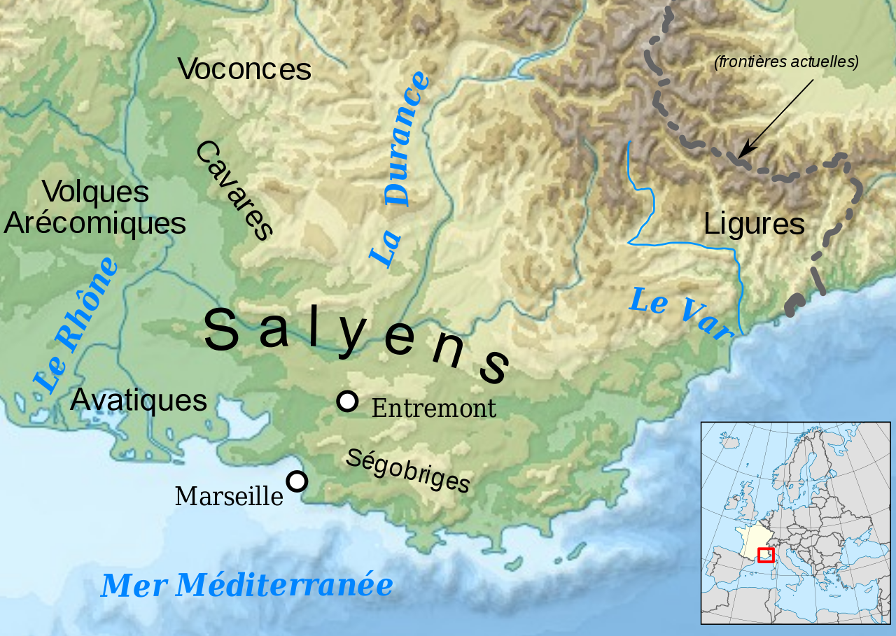
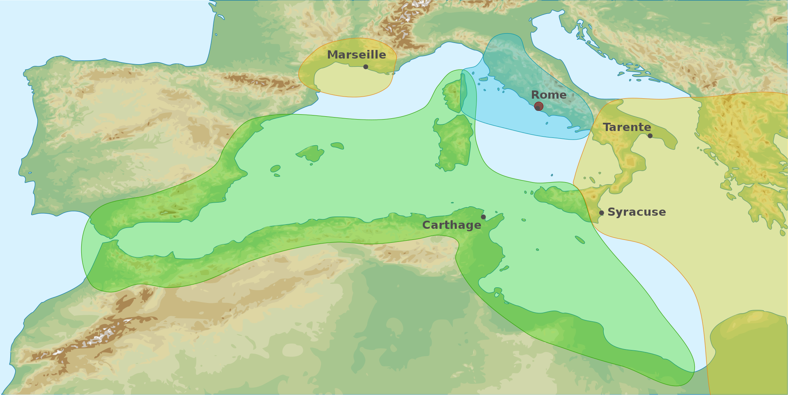

L'HISTOIRE DE MARSEILLE
Article
Avant la fondation de Massalia
Occupation préhistorique
L'espace côtier de Marseille est occupé au Paléolithique supérieur par les hommes ainsi qu'en témoigne la découverte en 1991 de la grotte Cosquer, dans l'une des calanques de Marseille, à environ six kilomètres au sud de l'actuel site de la ville. L'occupation de ce qui pourrait être, selon Jean Clottes, un « sanctuaire » a eu lieu à deux périodes : vers 27 000 ans et de 19 000 à 17 000 ans avant le présent, comme l'atteste la datation des peintures pariétales. Pour la période plus récente, des fouilles ont mis au jour des vestiges d'une implantation néolithique qui remonte à 6000 av. J.-C., près de la gare Saint-Charles. D'autres vestiges ont été découverts dans les grottes de L'Estaque, comme dans celle du quartier Les Riaux où furent retrouvés un foyer et des poteries mésolithiques en terre noire.Ligures

Marseille antique
Massalia, ville grecque (600 av. J.-C. - 49 av. J.-C.) La légende de Gyptis et Protis (600 av. J.-C.)La fondation de la cité, « la plus ancienne ville de France », remonte à 600 av. J.-C. ; elle est le fait de colons grecs venus de Phocée en Asie mineure, l'actuelle Foça, proche d'Izmir (Smyrne) en Turquie. Les Phocéens recherchaient des emplacements susceptibles de devenir des emporia ou comptoirs sur la côte. Cette activité correspond à un effort de création d'un réseau commercial, bâti par des marins et servi par des bateaux rapides à rames, les pentécontères et non une colonisation de peuplement, ce qui facilitait les implantations, les colonies ne requérant que peu de terres. En naviguant par cabotage, ils auraient découvert la baie du Lacydon (l'actuel Vieux-Port de Marseille), une calanque profonde, large et bien orientée (est-ouest), abritée du vent dominant - le mistral - par des collines élevées, propice à un établissement commercial. Les conditions exactes de la fondation font défaut à l'histoire de la ville, on ne retient aujourd'hui qu'une légende, reprise par Justin et par Athénée, œuvre rédigée au début du iiie siècle et citant Aristote, en donne le récit qui décrit comment Protis, l'un des commandants de la flotte grecque est choisi lors d'un banquet d'accueil par Gyptis, la fille du roi des Ségobriges, pour devenir son mari.
La nouvelle Phocée
La topographie première du site de la Marseille grecque est encore perceptible de nos jours. Promontoire environné par la mer, orienté vers le sud, il est dominé par trois buttes successives : la butte Saint-Laurent (26 mètres d'altitude en 1840), la butte des Moulins (42 mètres), et enfin la butte des Carmes (environ 40 mètres). Très vite la ville basse, l'astu, s'agrandit et englobe la butte des Carmes avant la fin du vie siècle av. J.-C.. Une dernière extension à l'époque hellénistique lui permet d'atteindre une surface d'environ cinquante hectares, que la ville ne dépassera pas avant le xviie siècle. La polis s'étale alors au niveau de la campagne environnante, la chôra. Les phocéens honorent leurs divinités favorites et les célèbrent dans l'Éphésion dédié à Artémis d'Éphèse et dans le sanctuaire d'Apollon delphinien, ainsi que mentionnés par Strabon. Ils importent aussi les lois et les usages oligarchiques ioniens et comme le cite Aristote, élaborent une Constitution des marseillais, conférant le pouvoir à quinze timouques dont trois détenant l'essentiel du pouvoir choisis dans une assemblée de 600 sénateurs.Marseille contre Carthage (540 av. J.-C.)

Marseille et la Gaule (ve au iie siècle av. J.-C.)
Marseille et la Gaule (ve au iie siècle av. J.-C.) La croissance forte de Marseille et du réseau des colonies massaliotes est citée comme l'une des raisons qui provoquent la création de la fédération des Salyens à la fin du III ème siècle av. J.-C., à partir de la réunion des « Celto-ligures » de Provence, entre le Var et le Rhône, autour de centres proto-urbains. La fédération salyenne s'avéra être un voisin « encombrant » pour les Massaliotes, ce qui avait provoqué de nombreuses tensions économiques et sans doute culturelles, dont rendent compte les auteurs antiques (notamment Tite-Live et Strabon). Dans un premier temps, de telles tensions avec les indigènes avaient entraîné plusieurs interventions militaires des Grecs dans l'arrière-pays marseillais. Sur la côte, les pirates ligures obligent parallèlement la cité grecque à renforcer constamment la protection de ses lignes commerciales maritimes par la création de places coloniales de défense. Grand port maritime ouvert sur toute la Méditerranée, Marseille abrita de nombreux marins et explorateurs renommés, comme Euthymènes qui explora au-delà des colonnes d'Hercule, les côtes de l'Afrique jusqu'à l'embouchure du fleuve Sénégal au ve siècle ou surtout Pythéas, qui, vers 340-325 av. J.-C., effectue un voyage dans les mers du nord de l'Europe, atteint l'Islande et le Groenland et approche du cercle polaire. Marseille a redécouvert son port antique en 1967 et a su le mettre en valeur dans le Jardin des Vestiges. Massalia connaît une forte croissance et devient une cité prospère, vivant des relations commerciales fortes avec la Grèce, l'Asie Mineure puis Rome et l'Égypte. La ville compte entre 30 000 et 40 000 habitants, ce qui en fait le plus grand centre urbain de Gaule. Les principales routes commerciales entre le Nord et l'Ouest de l'Europe et l'Orient empruntant les fleuves (en particulier Rhône et Saône), Massalia occupe une place stratégique. L'ambre, l'étain descendent le Rhône quand remontent le vin et les articles de luxe comme céramique, vaisselle. C'est aussi probablement par la cité phocéenne que furent introduits en Gaule les premiers vignobles15. Les fouilles de 2006 et 2007 sur la colline Saint-Charles ont ainsi mis au jour les vignobles les plus anciens de France. Un vin renommé est produit sur place qui rend nécessaire la fourniture de nombreuses amphores et la production de la céramique. À partir du V ème siècle av. J.-C., les produits locaux se substituent aux importations de Phocée ou d'Athènes. Enfin, Massalia est à l'origine de la monnaie dans la région en émettant des pièces pour le commerce local dès 490 av. J.-C., puis des oboles d'argent vers 450 av. J.-C., enfin des drachmes d'argent au début du ive siècle av. J.-C., ces monnaies portant le nom de la ville et acquérant une grande renommée.
Marseille et Rome (218 - 49 av. J.-C.)
Massilia ville romaine (49 av. J.-C. - 414)
La conquête de Marseille par César (-49)
Article détaillé : Siège de MarseilleLe développement au ier et iie siècle
À l'époque d'Auguste, la ville connaît une nouvelle grande phase de construction. L'agora-forum est reconstruit comme en témoignent les fragments de dallages découverts par Fernand Benoit au sud des Caves de Saint-Sauveur. Le forum est bordé à l'ouest par un autre grand édifice, le théâtre, dont quelques gradins ont été conservés jusqu'à nos jours dans l'enceinte du collège du Vieux-Port. Des thermes sont installés le long du port : les vestiges, remontés sur la place Villeneuve-Bargemon, sont aujourd'hui visibles quasiment à leur emplacement d'origine derrière l'Hôtel de Ville. Pendant le Haut Empire, la zone portuaire est considérable : elle s'étend sur la rive nord de la calanque du Lacydon, en suit la corne du port (Jardin des Vestiges) dont le quai est reconstruit à l'époque flavienne et se prolonge au fond du Vieux-Port actuel. Dans cette zone, les fouilles de la place Général-de-Gaulle ont dégagé une grande esplanade empierrée qui peut correspondre à des salines aménagées. De nombreux entrepôts à dolia sont connus ; une partie de l'un d'entre eux a été conservée en rez-de-chaussée du Musée des docks romains. Puis, durant le Bas Empire, la ville semble décliner légèrement au profit vraisemblablement d'Arles.Marseille pendant le Haut Moyen Âge
Article détaillé : Marseille au haut Moyen Âge.Les invasions barbares (414-536)

L'âge d'or du VI ème siècle
Marseille se développe à nouveau à partir du ve siècle de notre ère. À l'intérieur de la ville, la construction d'une première grande cathédrale marque la puissance de l'évêque, probablement Proculus, qui tient à rivaliser avec Arles. Deux basiliques funéraires ont été retrouvées en fouille. L'une, hypothétique, fouillée pour moitié dans l'emprise des immeubles du cours Belsunce par J. et Y. Rigoir en 1959 et par G. Bertucchi dans la construction du Centre Bourse en 1974. La seconde est clairement attestée par la fouille de M. Moliner, rue Malaval (2003-2004), avec la découverte d'une memoria intacte sous le chœur21. Sur la corne du port, comblée, se développe un habitat dont on retrouve la trace, hors les murs, jusqu'à l'actuelle bibliothèque de l'Alcazar (fouille M. Bouiron). Sur ce site, on a pu mettre en évidence une continuité directe avec les constructions romaines ; un groupe de bâtiments se développe progressivement entre le ve siècle et le viie siècle, avec dans un dernier état, un vaste bâtiment de type entrepôt. Les bâtiments sont abandonnés au début du viiie siècle. La vitalité du commerce est perceptible par les découvertes de productions céramiques venant de toute la Méditerranée, témoins privilégiés des marchandises qui affluent à Marseille durant la période ostrogothique et mérovingienne. Puis, prise dans les remous des conflits entre rois francs, la ville semble perdre de son importance à partir de la reprise en main de la Provence par Charles Martel et le pillage de la ville qui l'accompagne.Marseille médiévale
Article détaillé : Marseille au Moyen Âge.Passé l'an mille, Marseille se révèle à nouveau un port florissant qui participe aux Croisades. Les Marseillais sont présents en Afrique du Nord et possèdent un quartier à Saint-Jean d'Acre. Si la prise de cette dernière met un terme à l'aventure en Terre Sainte, leur présence est largement attestée en Méditerranée tout au long du Moyen Âge. La prise de la ville par les Catalans en 1423 et la destruction qui s'est ensuivie ont occasionné un profond déclin à la fin du Moyen Âge.
Pour en savoir plus sur : La puissance de Saint-Victor (950-1150)
Pour en savoir plus sur : La rivalité des comtes et des évêques
 "Voyage de Marie Madeleine à Marseille" réalisée par Giotto di Bondone en 1320 dans l'Église du couvent St François (Chapelle Ste Madeleine) à Assise (Italie)
"Voyage de Marie Madeleine à Marseille" réalisée par Giotto di Bondone en 1320 dans l'Église du couvent St François (Chapelle Ste Madeleine) à Assise (Italie)Marseille de la Renaissance à la Révolution
Pour en savoir plus sur: La Guerres d'Italie et alliance ottomane
Marseille sous la Révolution et l'EmpireMarseille sous la Révolution et l'Empire
Marseille au XIXe siècle
À partir de 1816, une mutuelle des portefaix, dirigée par six prieurs, réussit à prendre le contrôle des embauches sur le port. En 1835 encore, Marseille a seulement quatre huileries de graines49. Puis en 1851, l'huilerie-savonnerie marseillaise fut révolutionnée par l'invention du savon blanc cuit (ou « liquidé ») contenant plus d'eau que le savon marbré bleu et fabriqué selon un autre procédé. Ces premiers « savons blancs » sont fabriqués à partir des sous-produits des oléagineux, par opposition aux « savons verts » (ou bleus) à base d'olive49, les huiles de palmiste et de coprah pouvant désormais remplacer l'huile d'olive. 1851, le roi Sodji de Porto-Novo signe un traité de commerce et d'amitié avec la France pour développer l'exportation d'huile de palme. Il fait planter de nouvelles palmeraies au nord de Porto-Novo, sur les conseils des négociants afro-brésiliens qui tirent bénéfice des Traites négrières, réprimée par le British African Squadron, et sont en lien (en lien = liés à ou en rapport avec ?) avec des négociants français. Il veut protéger son commerce d'huile de palme et fait planter de nouvelles palmeraies au nord de Porto-Novo, dont les savonneries marseillaises seront le débouché. En 1863, Marseille compte 16 fabriques de savon blanc pour 36 fabriques de savon traditionnel. En 1870, c'est déjà 42 usines triturant les graines d'oléagineux et un marché en plein essor. Résultat, pour l'ensemble de la France, les importations de graines oléagineuses sont multipliées par 175 entre 1835 et 1870. La fin en 1864 du protectorat français créé par roi Sodji de Porto-Novo est une étape immportante dans l'Histoire de la culture de l'arachide car les palmeraies ainsi mises en orbite dans le commerce colonial français en sortent peu après, obligeant à trouver de nouvelles matières premières pour les savonneries marseillaises qui en avaient profité.L'âge d'or des colonies (1870-1914)
Grands chantiers du xixe siècle
Marseille de 1914 à nos jours
L'amorce du déclin (1920-1939)
L'ancien canal d'Arles à Bouc ne permettait pas un trafic suffisant entre Marseille et le Rhône, et le trafic du port phocéen était dépassé par ceux de Hambourg, Anvers, Rotterdam et Gênes. Le percement du canal de Marseille au Rhône, long de 81 km dont 7,2 km pour le tunnel du Rove, voté en 1902, commencé en 1916 et ouvert à la navigation en 1927, permet d'assurer une liaison sûre à l'abri du mistral. Cependant, la zone industrielle de l'étang de Berre, retardée par le manque de capitaux et les obstacles juridiques, est à peine ébauchée en 1940. La ville élit Siméon Flaissières qui conduit une politique de socialisme municipal. Toutefois, Simon Sabiani proche du milieu marseillais est premier adjoint de 1929 à 1935 et maire intérimaire en 1931 à la mort de Siméon Flaissières. En 1938, Marseille connaît le terrible incendie du magasin les Nouvelles Galeries qui cause la mort de 73 personnes et ravage quelques immeubles sur la Canebière. Devant l'ampleur du sinistre, les sapeurs-pompiers de Marseille, mal équipés et mal entraînés se montrent impuissants à éteindre le sinistre. Édouard Daladier qui est présent pour le congrès du Parti radical et logé dans l'hôtel de Noailles faisant face aux Nouvelles Galeries en flammes, déclare : « N'y a-t-il donc personne pour faire régner l'ordre dans cette ville ? » Le gouvernement décide de protéger la ville par une unité militaire. Les 32 marins-pompiers de l'arsenal militaire de Toulon venus en renfort ayant fait forte impression, la sécurité incendie de la ville est donc confiée à une unité de la marine nationale. Le bataillon de marins-pompiers est créé par un décret-loi de juillet 1939. La ville ayant par ailleurs de lourds problèmes financiers, Marseille est mise sous tutelle et dirigée par un administrateur extraordinaire jusqu'à la Libération en 1944.Seconde Guerre mondiale (1940-1945)
Le 1er juin 1940, un bombardement allemand cause la mort de 32 Marseillais et en blesse une soixantaine d'autres, le jour même où le bataillon de marins-pompiers, récemment créé, quitte la caserne provisoire de la rue de Lyon et prend possession de celle du boulevard de Strasbourg. À la suite du débarquement américain en Afrique du Nord, le 11 novembre, les troupes allemandes franchissent la ligne de démarcation et Marseille se retrouve occupée le 12 novembre 1942, comme le reste de la Zone libre. La ville souffre grandement de l'occupation. Les « rafles de Marseille » sont conduites en janvier 1943. Dans la nuit du 22 au 23, plusieurs milliers de personnes sont arrêtées par la police française dans toute la vieille ville (quartiers Opéra, Belsunce, Vieux-Port) puis déportées. Deux jours plus tard, le 24, sous l'autorité du général SS Oberg et en concertation avec les autorités françaises (dont René Bousquet, secrétaire général de la police), la rive nord du Vieux-Port, qualifiée de quartier criminel par les nazis, est évacuée. Les habitants doivent quitter leur domicile avec un maximum de 30 kg de bagages. 30 000 personnes sont expulsées. Entre le 1er et le 18 février, les artificiers allemands procèdent à la destruction du quartier : 1 500 immeubles sont dynamités, laissant un champ de ruines jusqu'à la Libération. Le 20 octobre 1943, la Gestapo arrête 30 enfants juifs cachés au château de La Verdière, ainsi que 14 adultes qui étaient présents (dont 9 mères et la directrice Alice Salomon). Tous sont déportés à Auschwitz par les convois 61, 62 et 68. Marseille subit également plusieurs alertes aériennes. Le bombardement américain du 27 mai 1944 est particulièrement dévastateur compte tenu de l'insuffisance des abris antiaériens et cause la mort de 3 000 personnes, en blessant environ 6 000. Le 15 août 1944 a lieu le débarquement en Provence. À cette occasion, l'occupant fait sauter les installations portuaires : plus de 200 navires sont coulés et le célèbre pont transbordeur détruit. Les FFI de Marseille (et parmi eux Gaston Defferre) préparent la libération de la ville. Le lundi 21 août, ils lancent l'insurrection accompagnée d'un mot d'ordre de grève générale. Mais mal armés et peu nombreux, leur position est critique jusqu'à l'arrivée des tirailleurs algériens du général de Monsabert qui pénètrent dans Marseille le mercredi 23. Les combats avec l'armée allemande se poursuivent plusieurs jours, jusqu'à la capitulation du général Schaeffer le 28 août. Le 29, le général de Lattre de Tassigny assiste au défilé de l'armée d'Afrique sur la Canebière.Après-guerre et difficultés (1945-1980)
Les premiers grands projets de reconstruction décidés pour Marseille par le Ministère de la Reconstruction et de l'Urbanisme (MRU) en 1945-46 sont la reconstruction du Vieux-Port (réalisée entre 1947 et 1960), l'Unité d'habitation de Le Corbusier (réalisée entre 1947 et 1952) et les cités Saint-Just Palmieri et Garderie (1re tranche Palmieri réalisée entre 1947 et 1950). Marseille connaît une période économique très difficile à partir des années 1950 avec l'indépendance progressive des colonies françaises puis dans les années soixante-dix, la crise qui met à mal sa structure industrielle. En 1962, Marseille accueille des dizaines de milliers de Pieds-Noirs fuyant l'Algérie indépendante. Les Ratonnades de 1973 sont une vague de violences racistes envers les Algériens perpétrées en France et notamment à Marseille pendant l'été et l'automne 1973.Entre renouveau, nouveaux projets et difficultés persistantes (1980 - nos jours)
Dans les années 1990, le projet Euroméditerranée de développement économique et de rénovation urbaine est lancé. De nombreuses infrastructures nouvelles et rénovations sont réalisées dans les années 2000 et 2010 : le tramway, la rénovation de l'Hôtel-Dieu en hôtel de luxe, Le Silo, l'agrandissement du stade Vélodrome, la tour CMA CGM, le musée des civilisations de l'Europe et de la Méditerranée (MuCEM) ou encore la Villa Méditerranée. En 2012, Marseille est Capitale mondiale de l'eau, réunissant des centaines de pays, des ONG et des institutions mondiales à l'occasion du Forum mondial de l'eau. En 2013, Marseille est capitale européenne de la culture. Cette opération permet d'attirer à Marseille 10 millions de visiteurs (avec une estimation de 5 millions de visiteurs effectifs dont nombre venant de départements voisins, certains effectuant plusieurs visites)Article détaillé : Marseille Provence 2013.
La ville est élue Capitale européenne de la culture pour l'année 2013. Elle organisa de nombreux événements culturels et artistiques, et accueillit près de 10 millions de visiteurs. Mais Marseille accueille régulièrement l'attention des médias en raison des multiples règlements de compte, notamment dans les quartiers Nord, lié au trafic de drogue.
Article détaillé : Attentat de la gare Saint-Charles de Marseille.
Le 1er octobre 2017, aux alentours de 13 h 45, la ville est le théâtre d'un attentat djihadiste, un terroriste fait irruption sur le parvis de la gare de Marseille-Saint-Charles, il est équipé d'une arme blanche, dont un couteau. Les deux victimes âgées d'une vingtaine d'années ont été égorgées et poignardées, il a été abattu peu de temps après par des militaires d'une patrouille de l'opération Sentinelle qu'il s'apprêtait à attaquer. Daech revendique l'attaque le jour-même. Un an après, une plaque commémorative au nom des deux victimes est dévoilée ainsi qu'un hommage leur est fait. En juin 2023, la ville est l'une des plus touchées de France par les émeutes qui touchent le pays dans le contexte du meurtre du jeune Nahël par un policier.